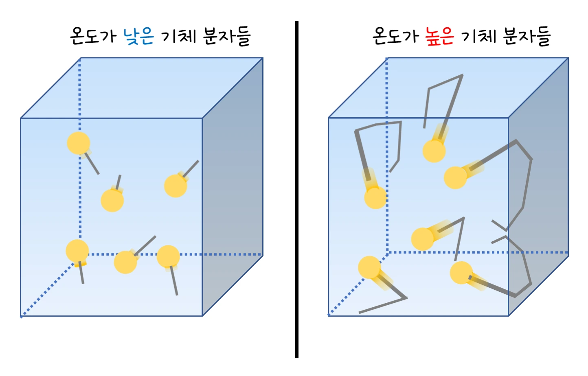

중1 과학 · 물질의 상태 변화 · 웹툰 1화 「물질의 세 가지 얼굴, 고체·액체·기체」
실험에서 온도 슬라이더 하나로 고체·액체·기체의 입자 배열과 운동을 한 화면에서 비교했습니다. 온도가 오를수록 세 상태 모두 입자가 활발해졌고, 기체의 속력은 절대온도의 제곱근에 비례했습니다. 상태마다 입자가 어떻게 다른지 정리합니다.
실험 데이터 되짚기
온도를 바꿔 가며 기체(질소) 입자의 대표 속력을 기록하면 이렇습니다 (v = √(3RT/M)).
| 온도 (℃) | 0 | 25 | 50 | 100 |
|---|---|---|---|---|
| 절대온도 (K) | 273 | 298 | 323 | 373 |
| 입자 속력 (m/s) | 493 | 515 | 536 | 577 |
| 속력 ÷ √T | 29.8 | 29.8 | 29.8 | 29.8 |
속력 ÷ √T가 일정 — 기체 입자의 속력은 절대온도의 제곱근에 비례합니다. 고체·액체 입자는 이 식을 쓸 수 없지만, 온도가 오르면 진동·이동이 활발해지는 것은 같습니다.
| 고체 | 액체 | 기체 | |
|---|---|---|---|
| 배열 | 규칙적·촘촘 | 가까이 붙어 있으나 불규칙 | 멀리 떨어짐 |
| 운동 | 제자리에서 진동 | 자리를 바꾸며 이동 | 사방으로 빠르게 날아다님 |
| 모양 | 일정 | 그릇을 따라 변함 | 그릇 전체를 채움 |
| 부피 | 일정 | 일정 | 그릇 전체 (압축 잘 됨) |
모든 물질은 작은 입자로 이루어져 있고, 입자 사이의 인력과 운동 에너지의 균형에 따라 상태가 정해집니다. 인력이 운동을 이기면 고체, 거의 작용하지 않으면 기체입니다.
움직여 보기
고체·액체·기체 — 입자는 어떻게 놓이고 움직일까?
세 상자 모두 같은 수(12개)의 입자입니다. 입자 크기는 그대로, 놓인 간격과 움직임만 다릅니다. 온도를 올리면 세 상태 모두 입자 운동이 활발해지는 것을 확인해 보세요(입자 크기·속력은 실제 비율이 아닌 그림).
온도는 입자의 평균 운동 에너지를 나타내는 척도입니다. 온도가 높을수록 모든 상태에서 입자 운동이 활발해집니다. 기체 입자의 대표 속력(제곱평균제곱근)은 절대온도(K = ℃ + 273)의 제곱근에 비례해 온도를 2배(K 기준)로 올리면 √2 ≈ 1.4배가 됩니다. 같은 온도라도 가벼운 분자(수소)는 무거운 분자(이산화 탄소)보다 훨씬 빠릅니다.
교재 그림
온도가 낮을 때와 높을 때의 기체 분자

분자 뒤의 선은 같은 시간 동안 움직인 길이입니다. 분자 수와 크기는 같고, 온도가 높으면 더 빠르게 더 멀리 움직입니다.
움직여 보기
온도를 올리면, 가벼운 분자는? — 기체 입자의 속력
질소 값은 표 1과 같습니다(v = √(3RT ÷ M)). 0 ℃ → 100 ℃로 올리면 질소는 493 → 577 m/s로 빨라지지만, 같은 온도에서도 가벼운 수소가 질소보다 약 3.7배 빠릅니다. 화면 속 입자는 실제보다 아주 느리게, 속력 비율은 같게 그렸습니다.
속력 식은 이상 기체에만 적용되고 실제 분자의 속력은 넓게 분포합니다(맥스웰 분포). 공기 분자가 초속 500 m로 날아다니는데도 향기가 방 건너편까지 몇 초 걸리는 것은 분자끼리 끊임없이 부딪히기 때문입니다. 고체·액체는 눌러도 거의 줄지 않지만 기체는 쉽게 압축되어 타이어·스프레이에 쓰입니다.
질소 25 ℃에서 약 515 m/s · 온도 ↑ → 입자 운동 ↑ (세 상태 모두)
“물질을 이루는 입자들이 얼마나 촘촘히, 그리고 얼마나 자유롭게 움직이느냐에 따라 상태가 달라져!”
웹툰 1화 · 지유: “같은 물인데 얼음, 물, 수증기, 이렇게 세 가지 모습이 있잖아. 왜 그래?” 몰리(하늘빛)의 답.
“고체-일정한 모양과 부피, 액체-일정한 부피만, 기체-둘 다 일정하지 않음! 이렇게 정리되네.”
웹툰 1화 · 민재: “기체는 입자들이 훨씬 더 멀리 떨어져서 사방으로 자유롭게 날아다니는 거지?” 몰리: “정확해! 그래서 기체는 담는 용기를 가득 채워.”
속력 ∝ √T이므로 절대온도가 2배: 298 K × 2 = 596 K = 약 323 ℃. 50 ℃가 아니라는 점에 주의 — 섭씨가 아니라 절대온도를 2배로 해야 합니다.
액체 입자는 서로 가까이 붙어 있어(부피 일정) 압축되지 않지만, 자리를 바꾸며 움직일 수 있어 그릇 모양을 따라 흐릅니다(모양 변함). 고체는 제자리 진동만 하므로 모양도 유지되고, 기체는 멀리 떨어져 그릇 전체를 채웁니다.